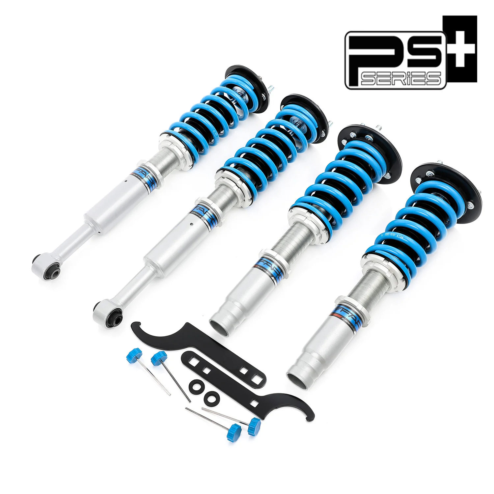

1 / 716-stopniowe zawieszenie gwintowane Do Honda Accord 2003-2007 CM/Acura TSX 2004-2008 CL9 PS012320
Aplikacja HONDA ACCORD 2003-2007 CM ACURA TSX 2004-2008 CL9 Pakiet zawiera Gwinty przednie × 2 sztuki Gwinty tylne × 2 sztuki Klucz × 2 Cechy Konstrukcja amortyzatora z pojedynczą rurką i większą pojemnością oleju/gazu Regulowana wysokość jazdy (regulacja tłumienia za pomocą 16 kliknięć) Regulowane napięcie sprężyny wstępnej Sprężyna o dużej wytrzymałości na rozciąganie (testowana 600 000 cykli przy zniekształceniu…
Application HONDA ACCORD 2003-2007 CM ACURA TSX 2004-2008 CL9 Package Includes Front coilovers × 2 pieces Rear coilovers × 2 pieces Wrench × 2 Features Mono-tube shock design with larger oil/gas capacity Adjustable ride height (16 clicks damping adjustable) Adjustable pre-load spring tension Hi-Tensile performance spring (600,000 cycle tested with <0.04% distortion) Fitted rubber boots to protect dampers Improved handling without sacrificing comfort Affordable appearance upgrade Easy installation with proper tools Ideal for track, drift, fast road and daily driving All pictured accessories included Default 1-year warranty for any manufacturing defect, upgrade to 2 years with our Extended Warranty Program Technical Specifications Front spring rate: 10 kg/mm Rear spring rate: 5 kg/mm Adjustable height: Yes Adjustable camber plate: No Adjustable damper: 16-click adjustable force Warranty All items carry standard 1 year warranty from purchase date. Proof of purchase required. For warranty claims, please provide order number and documentation (photos/videos) of the issue. Additional information may be requested to properly diagnose problems.
1499,99 PLN
Opis produktu
Aplikacja
- HONDA ACCORD 2003-2007 CM
- ACURA TSX 2004-2008 CL9
Pakiet zawiera
- Gwinty przednie × 2 sztuki
- Gwinty tylne × 2 sztuki
- Klucz × 2
Cechy
- Konstrukcja amortyzatora z pojedynczą rurką i większą pojemnością oleju/gazu
- Regulowana wysokość jazdy (regulacja tłumienia za pomocą 16 kliknięć)
- Regulowane napięcie sprężyny wstępnej
- Sprężyna o dużej wytrzymałości na rozciąganie (testowana 600 000 cykli przy zniekształceniu <0,04%)
- Zamontowane gumowe buty chroniące amortyzatory
- Lepsza obsługa bez utraty komfortu
- Niedroga aktualizacja wyglądu
- Łatwa instalacja przy użyciu odpowiednich narzędzi
- Idealny na tor, drift, szybką drogę i codzienną jazdę
- W zestawie wszystkie akcesoria widoczne na zdjęciu
- Standardowa roczna gwarancja na każdą wadę produkcyjną, możliwość rozszerzenia do 2 lat w ramach naszego programu rozszerzonej gwarancji
Dane techniczne
- Twardość sprężyny przedniej: 10 kg/mm
- Twardość tylnej sprężyny: 5 kg/mm
- Regulowana wysokość: Tak
- Regulowana płyta camber: Nie
- Regulowany amortyzator: regulowana siła za pomocą 16 kliknięć
Gwarancja
Wszystkie produkty objęte są standardową roczną gwarancją od daty zakupu. Wymagany dowód zakupu. W przypadku roszczeń gwarancyjnych należy podać numer zamówienia i dokumentację (zdjęcia/filmy) problemu. W celu prawidłowego zdiagnozowania problemów mogą być wymagane dodatkowe informacje.
Application
- HONDA ACCORD 2003-2007 CM
- ACURA TSX 2004-2008 CL9
Package Includes
- Front coilovers × 2 pieces
- Rear coilovers × 2 pieces
- Wrench × 2
Features
- Mono-tube shock design with larger oil/gas capacity
- Adjustable ride height (16 clicks damping adjustable)
- Adjustable pre-load spring tension
- Hi-Tensile performance spring (600,000 cycle tested with <0.04% distortion)
- Fitted rubber boots to protect dampers
- Improved handling without sacrificing comfort
- Affordable appearance upgrade
- Easy installation with proper tools
- Ideal for track, drift, fast road and daily driving
- All pictured accessories included
- Default 1-year warranty for any manufacturing defect, upgrade to 2 years with our Extended Warranty Program
Technical Specifications
- Front spring rate: 10 kg/mm
- Rear spring rate: 5 kg/mm
- Adjustable height: Yes
- Adjustable camber plate: No
- Adjustable damper: 16-click adjustable force
Warranty
All items carry standard 1 year warranty from purchase date. Proof of purchase required. For warranty claims, please provide order number and documentation (photos/videos) of the issue. Additional information may be requested to properly diagnose problems.
FAPO Polska
Ten produkt obsługujemy lokalnie
Autoryzowana obsługa
FAPO Polska prowadzi katalog, kontakt i zamówienia bez odsyłania klienta do zewnętrznych sklepów.
Dobór po aucie
Sprawdzamy dopasowanie produktu do pojazdu, rocznika i wersji przed finalizacją zamówienia.
Wsparcie po zakupie
Masz kontakt w Polsce w sprawach zamówień, wysyłki, gwarancji i zwrotów.